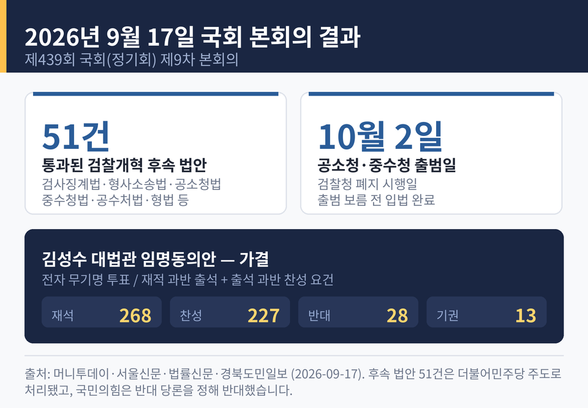
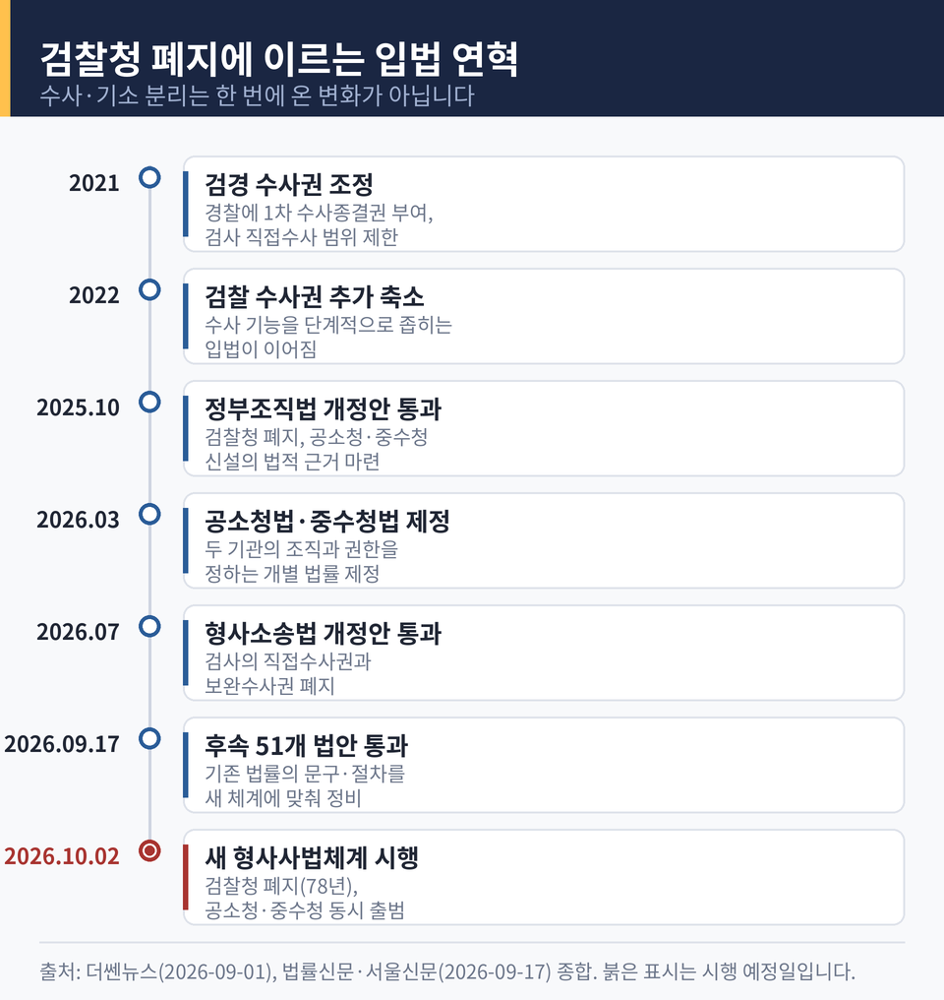
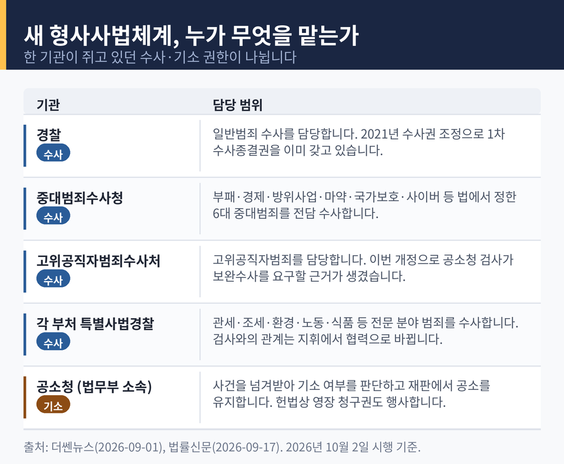
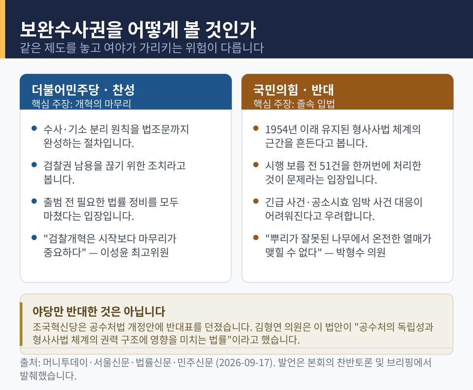
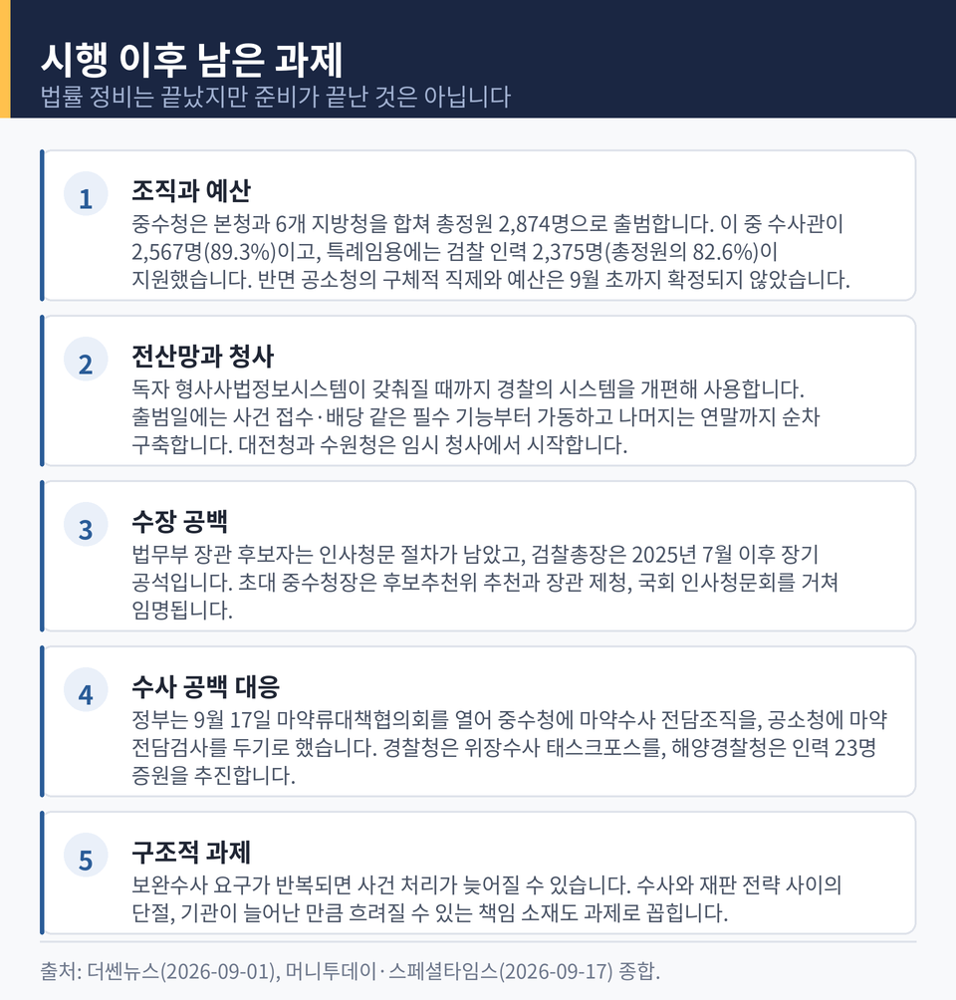

검찰개혁 후속 51개 법안 국회 통과, 수사·기소 구조 이렇게 바뀝니다
이번 글에서는 2026년 9월 17일 국회 본회의에서 처리된 검찰개혁 후속 법안 51건을 정리해 보겠습니다. 같은 날 김성수 대법관 임명동의안도 함께 가결됐습니다. 무슨 일이 있었고, 무엇이 왜 쟁점인지 차례로 짚어보겠습니다.
세 줄 요약
- 국회는 9월 17일 본회의에서 검찰개혁 후속 법안 51건을 더불어민주당 주도로 의결했습니다. 국민의힘은 반대 당론을 정하고 끝까지 반대했습니다.
- 10월 2일 검찰청이 폐지되고 공소청과 중대범죄수사청이 출범하는 일정에 맞춘 법률 정비입니다. 검사의 수사권이 사라지고 수사와 기소가 완전히 분리됩니다.
- 김성수 대법관 임명동의안은 재석 268명 중 찬성 227명, 반대 28명, 기권 13명으로 가결됐습니다.
51건이 한꺼번에 통과된 날
국회는 9월 17일 제439회 국회 정기회 제9차 본회의를 열었습니다. 이 자리에서 검찰개혁 후속 법안 51건이 의결됐습니다.
처리된 법안의 목록은 길었습니다. 검사징계법, 형사소송법, 공소청법, 중대범죄수사청법, 고위공직자범죄수사처법, 사법경찰관리법, 형법 개정안이 모두 포함됐습니다. 여기에 노인복지법과 아동복지법, 성폭력범죄의 처벌 등에 관한 특례법, 아동·청소년의 성보호에 관한 법률, 집회 및 시위에 관한 법률, 석유사업법까지 이어졌습니다.
법안 하나하나가 제각기 새 제도를 설계한 것은 아닙니다. 대부분은 '검찰'과 '검사의 수사권'을 전제로 쓰여 있던 기존 법률의 문구와 절차를 새 체계에 맞춰 손보는 정비 작업입니다. 그런데도 51건이라는 숫자가 나온 것은, 검찰이라는 기관이 지난 78년간 우리 법령 곳곳에 얼마나 깊이 들어와 있었는지를 보여줍니다.
표결 과정은 순탄하지 않았습니다. 서울신문 보도에 따르면 민주당 의원들의 예상 밖 결석으로 한때 의결정족수 미달 가능성이 제기됐습니다. 성폭력처벌법과 형사사법전자화촉진법 개정안을 의결할 때는 정족수를 딱 맞춘 150명이 참석했습니다. 민주당은 의원들에게 "정족수 부족으로 표결이 어려워질 수 있다"며 긴급 소집령을 내렸다고 합니다.
과반 의석을 가진 여당이 주도한 처리였지만, 본회의장 안의 사정은 그 숫자만큼 여유롭지 않았던 셈입니다.

같은 날 문턱을 넘은 김성수 대법관 임명동의안
같은 본회의에서 김성수 대법관 후보자에 대한 임명동의안도 가결됐습니다. 전자 무기명 투표 결과 재석 268명 중 찬성 227명, 반대 28명, 기권 13명이었습니다.
김 후보자는 57세로 사법연수원 24기, 현직 서울고법 부장판사입니다. 전남 함평 출신으로 한양대 법학과를 졸업하고 제34회 사법시험에 합격했습니다. 1998년 광주지법 판사로 임관해 청주지법 수석부장판사와 수원고법 부장판사, 사법연수원 수석교수를 거쳤습니다. 판사 경력이 약 28년입니다.
지난 8월 18일 조희대 대법원장이 이흥구 전 대법관의 후임으로 임명 제청했고, 제청 30일 만에 국회를 통과했습니다. 이재명 대통령이 임명안을 재가하면 6년 임기가 시작됩니다. 현 정부 출범 이후 처음 임명되는 대법관입니다.
주목할 점은 처리 방식입니다. 인사청문특별위원회는 9월 16일 여야 합의로 경과보고서를 채택했습니다. 다만 그 안에는 민주당의 '적격' 의견과 국민의힘의 '부적격' 의견이 나란히 담겼습니다.
민주당은 약 28년의 재판 경력을 근거로 전문성과 자질을 갖췄다고 봤습니다. 국민의힘은 청문회 답변이 불명확했다는 점, 그리고 대통령이 대법원장에게 대법관 후보자 재제청을 요구할 수 있는지 등 사법부 독립과 관련한 현안에 명확한 입장을 밝히지 않았다는 점을 들어 부적격 의견을 냈습니다. 김 후보자가 처남을 통해 서울 강남 아파트에 시세보다 낮은 금액으로 장기간 거주했다는 의혹도 쟁점이 됐습니다. 김 후보자는 "국민 눈높이에 비춰 송구하다"며 과세 대상 부분에 대한 증여세 납부 절차를 진행하고 있다고 밝혔습니다.
국민의힘은 법안 51건에는 반대 당론을 정했지만, 대법관 동의안 표결에는 당론을 정하지 않고 자율투표 방침을 세웠습니다. 같은 날 같은 의석이 두 사안을 다르게 다룬 대목입니다.
왜 중요한가 — 78년 만에 사라지는 검찰청
이번 법안들이 중요한 이유는, 이것이 단독 입법이 아니라 이미 확정된 큰 변화의 마지막 조각이라는 점입니다.
10월 2일부터 개정 정부조직법과 공소청법, 중수청법, 개정 형사소송법이 시행됩니다. 1948년 출범한 검찰청은 78년 만에 문을 닫습니다. 1954년 형사소송법 제정 이후 유지돼 온 검사의 수사권은 전면 폐지되고, 수사와 기소가 완전히 분리됩니다.
이 변화는 한 번에 온 것이 아닙니다. 2021년 검경 수사권 조정으로 경찰에 1차 수사종결권이 주어지고 검사의 직접수사 범위가 제한됐습니다. 2022년에는 검찰 수사권을 더 줄이는 입법이 뒤따랐습니다. 2025년 10월 검찰청 폐지와 공소청·중수청 신설을 담은 정부조직법 개정안이 국회를 통과했고, 2026년 3월 공소청법과 중수청법이 제정됐습니다. 그리고 2026년 7월 검사의 직접수사권과 보완수사권을 폐지하는 형사소송법 개정안이 통과됐습니다.
예전에는 한 기관이 수사와 기소, 영장 청구, 공소 유지를 모두 쥐었습니다. 앞으로는 일반범죄는 경찰, 부패·경제·방위사업·마약·국가보호·사이버 등 6대 중대범죄는 중수청, 고위공직자범죄는 공수처가 맡습니다. 관세·조세·환경·노동·식품 등 전문 분야는 각 부처 특별사법경찰이 담당합니다. 법무부 소속 공소청은 이들로부터 사건을 받아 기소 여부를 판단하고 재판에서 공소를 유지합니다. 헌법이 검사에게 준 영장 청구권도 공소청 검사가 행사합니다.
권한을 나눠 서로 견제하게 만든다는 것이 이 설계의 취지입니다. 9월 17일의 51건은 그 설계도를 실제 법조문에 반영하는 작업이었습니다.

법안 안에 무엇이 담겼는가
몇 가지 조항은 따로 살펴볼 만합니다.
중수청법 개정안이 이번 51건의 핵심으로 꼽힙니다. 아동학대와 가정폭력, 성범죄 등 사회적 약자를 대상으로 한 이른바 7대 범죄에 한해, 공소청 검사가 중수청과 지방중수청에 보완수사 또는 재수사를 요구할 수 있게 했습니다. 다른 수사기관이 수사한 사건을 보완수사 요구나 이송으로 받은 경우, 중수청이 중대범죄만이 아니라 사회적 약자 대상 범죄까지 수사할 수 있도록 범위를 넓힌 것입니다.
즉, 검사의 보완수사권을 전면 폐지한 큰 틀은 유지하면서, 피해자 보호가 특히 절실한 영역에만 예외 통로를 남겨둔 구조입니다. 이 좁은 통로의 폭이 얼마나 적절한지가 이번 논쟁의 한가운데에 있습니다.
형사소송법 개정안은 검사와 특별사법경찰관리의 관계를 기존 '지휘'에서 '협력'으로 바꿨습니다. 또 송치 사건의 공소 제기나 재수사 요구, 공소 유지에 필요한 경우 검사가 피의자나 사건 관계인을 직접 만나 사실관계를 확인하는 면담 제도를 도입했습니다. 재정신청 사건의 관할 법원은 고등법원에서 지방법원 본원 합의부로 바뀝니다.
검사징계법 개정안은 검찰청 명칭을 공소청으로 바꾸고, 검사 징계 종류에 파면을 추가했습니다. 검사징계위원회 위원 임기는 3년에서 1년으로 줄었습니다.
공수처법 개정안은 공수처 검사의 수사 절차와 영장 청구, 구속기간 계산에 관한 규정을 마련했습니다. 공소청 검사가 공수처 검사에게 보완수사를 요구할 수 있는 근거도 새로 만들었습니다.
여기서 눈에 띄는 장면이 있었습니다. 조국혁신당이 이 공수처법 개정안에 반대표를 던진 것입니다. 김형연 의원은 반대토론에서 이 법안이 "공수처의 독립성과 대한민국 형사사법 체계의 권력 구조에 영향을 미치는 법률"이라고 했습니다. 이번 입법을 둘러싼 이견이 여야 대립만으로 정리되지 않는다는 점을 보여줍니다.
성폭력 사건 처리 절차도 손질됐습니다. 사법경찰관이 성폭력범죄나 아동·청소년 대상 성범죄를 수사한 경우 사건을 검사에게 모두 넘기도록 하는 전건송치 의무가 도입됐습니다. 노인복지법과 아동복지법에도 같은 취지의 규정이 담겼습니다.
성폭력처벌법 개정안을 두고는 전날 법사위 소위에서 여당 의원들 사이에 충돌이 있었습니다. 미성년 성폭력 피해자 보호와 검사의 수사권 배제 가운데 무엇을 앞세울지가 갈렸기 때문입니다. 최종안에서는 미성년 피해자에 대한 검사 면담 영상의 증거 능력을 제한한다는 문구가 삭제되고, 부대의견에 예외적인 상황에서 검·경이 협력할 수 있도록 하는 내용이 포함됐습니다.

쟁점 — 보완수사권을 어떻게 볼 것인가
여야의 대립은 결국 한 지점으로 모였습니다. 검사의 보완수사권을 없애는 것이 개혁의 완성인가, 아니면 안전장치의 제거인가.
여당의 논리는 '마무리'였습니다. 이성윤 민주당 최고위원은 찬성토론에서 검찰개혁이 "단순히 하나의 권력기관을 개혁하는 일"이 아니라며, 검찰권 남용을 끊는 조치라고 설명했습니다. "검찰개혁은 시작보다 마무리가 중요하다"고도 했습니다. 김성회 원내대변인은 본회의 후 서면 브리핑에서 "다음 달 공소청과 중수청 출범을 앞두고 필요한 법률 정비를 모두 마친 것"이라며 "국민께서 체감할 수 있는 사법개혁으로 이어지도록 끝까지 챙기겠다"고 했습니다.
야당의 논리는 '졸속'과 '공백'이었습니다. 국회 법제사법위원회 야당 간사인 박형수 국민의힘 의원은 51개 법안에 대한 총괄 반대토론에서 "뿌리가 잘못된 나무에서 온전한 열매가 맺힐 수 없다"고 했습니다. 1954년 제정 이래 유지돼 온 형사사법 체계의 근간을 흔드는 일이라는 주장입니다.
박 의원이 든 구체적 우려는 두 가지였습니다. 하나는 절차입니다. "70년 형사사법체계를 바꾸면서 후속 정비를 시행 보름 전에" 한꺼번에 처리하는 것이 온당한 개혁이냐고 물었습니다. 다른 하나는 실무입니다. 긴급한 수사가 필요한 사건이나 공소시효가 임박한 사건에서 경찰의 보완수사를 기다릴 수밖에 없게 되고, 수사기관이 사건을 축소하거나 제대로 수사하지 않을 때 이를 바로잡기 어려워진다는 지적입니다.
두 주장은 각기 다른 위험을 가리킵니다. 여당이 경계하는 것은 수사와 기소를 한 손에 쥔 기관의 권한 남용입니다. 야당이 경계하는 것은 그 손을 놓은 뒤 아무도 잡아주지 않는 사건들입니다. 어느 쪽 위험이 더 큰지는 제도가 굴러가 봐야 드러날 문제입니다.

앞으로의 전망 — 시행일까지 보름
법률 정비는 끝났지만 준비가 끝난 것은 아닙니다.
중수청은 본청과 서울·수원·대전·대구·부산·광주 6개 지방청을 포함해 총 2,874명 규모로 출범합니다. 이 가운데 수사관이 2,567명으로 정원의 89.3%를 차지합니다. 특례임용에는 검찰 소속 인력 2,375명이 지원했습니다. 중수청 총정원의 82.6%에 해당하는 규모입니다. 조직의 이름은 바뀌지만 그 안에서 일하는 사람은 상당 부분 이어진다는 뜻입니다.
반면 미결 과제도 남았습니다. 9월 초 보도 시점까지 공소청의 구체적 직제와 예산이 확정되지 않아 조직 편제와 인력 배치가 변수로 남아 있었습니다. 전산망은 독자 시스템이 구축될 때까지 경찰의 형사사법정보시스템을 개편해 쓰기로 했고, 출범일에는 사건 접수와 배당 같은 필수 기능부터 가동한 뒤 나머지는 연말까지 순차적으로 갖출 계획입니다. 청사도 대전청과 수원청은 임시 청사에서 업무를 시작합니다.
수장 공백도 부담입니다. 법무부 장관 후보자로 더불어민주당 김승원 의원이 지명됐지만 인사청문회 등 절차가 남았고, 검찰총장은 2025년 7월 심우정 전 총장이 물러난 뒤 장기 공석입니다. 초대 중수청장은 행정안전부의 후보추천위원회 추천과 장관 제청, 국회 인사청문회를 거쳐 대통령이 임명하는 절차가 진행 중입니다.
정부도 공백 우려를 의식하고 있습니다. 같은 9월 17일 정부는 제3차 마약류대책협의회를 열고 대응 방안을 논의했습니다. 서울지방중수청 마약수사국 산하에 4개 마약수사과를 두고 그중 한 곳은 관세청과 상시 협력하는 마약밀수 전담과로 운영합니다. 수원지방수사청에는 마약합동수사과를 신설하고, 대전·대구·부산·광주 지방수사청에도 마약수사과를 배치합니다. 공소청에는 마약 전담검사와 전담부를 둡니다. 경찰청은 국가수사본부에 위장수사 태스크포스를 운영하고, 해양경찰청은 마약수사 인력 23명을 추가 배치합니다. 임기근 국무조정실장은 기관 간 협력을 강화해 마약 수사 공백을 차단하겠다고 밝혔습니다.
전문가들이 지적하는 구조적 과제는 조직도만으로 해결되지 않습니다. 수사기관이 작성한 기록을 공소청이 다시 검토하고 보완수사 요구로 돌려보내는 일이 반복되면 사건 처리가 늦어질 수 있습니다. 수사 단계에서 검사가 증거 확보와 기소 가능성, 공소 유지 전략을 함께 따지던 구조가 사라지면서 수사와 재판 전략 사이에 단절이 생길 수 있다는 우려도 나옵니다. 기관이 늘어난 만큼 책임 소재가 흐려질 위험도 있습니다.
법무부는 수사준칙 등 하위법령을 정비하고 합동수사단 구성, 공소청 전담검사 지정, 중요 사건 사전 협력, 특별사법경찰 지도·조언 제도를 마련해 공백을 줄이겠다는 방침입니다. 야당이 제기한 긴급 사건과 공소시효 임박 사건 처리 문제는 시행 이후 실제 사례가 쌓이면서 후속 입법 과제로 다시 올라올 가능성이 큽니다.

정리하면 이렇습니다.
9월 17일 국회는 10월 2일 시행을 위한 법률 정비를 마쳤습니다. 여당은 개혁의 마무리라고 했고, 야당은 졸속이라고 했습니다. 두 평가는 이 글에서 결론 내릴 문제가 아닙니다.
다만 한 가지는 분명합니다. 논쟁의 무대가 국회에서 현장으로 옮겨간다는 것입니다.
"제도의 성패는 법조문이 아니라 사건 하나하나에서 드러난다."
보름 뒤 새 체계가 문을 엽니다. 이 개편이 어떻게 평가될지는, 그때부터 접수되는 사건들이 얼마나 제대로 다뤄지는지가 답해줄 것입니다.